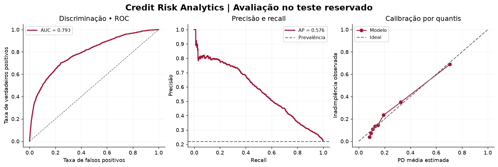
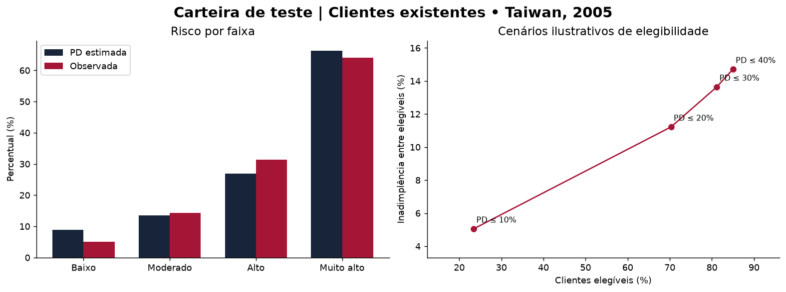
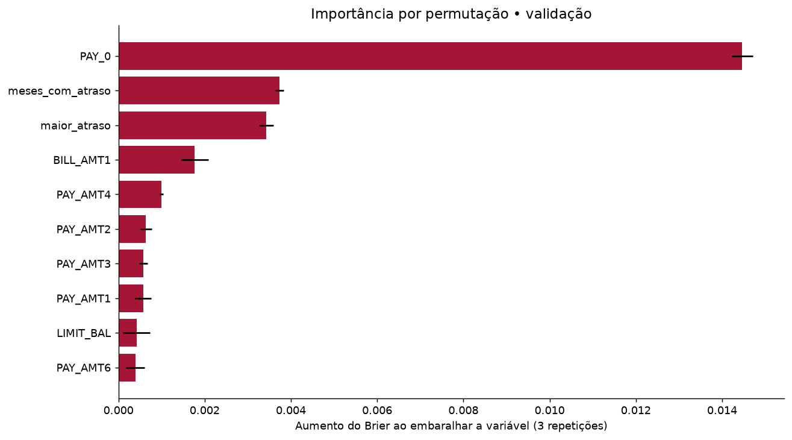

PORTFÓLIO • EXPERIMENTO REPRODUZÍVEL
Credit Risk Analytics
Modelagem de inadimplência e análise de risco comportamental em uma base pública de cartões de crédito.
Modelo selecionado: XGBoost calibrado · Menor Brier na validação.
Clientes no teste5.998ROC AUC0,793Brier0,132KS45,9%
Qual modelo estimou melhor as probabilidades?
Comparação na validação. O conjunto de teste foi reservado para a avaliação final do modelo escolhido.
| Modelo |
Brier ↓ |
ROC AUC ↑ |
AP ↑ |
| XGBoost calibrado |
0,1409 |
0,7633 |
0,5211 |
| Regressao Logistica |
0,1419 |
0,7493 |
0,5045 |
| Referencia |
0,1722 |
0,5000 |
0,2211 |
Resultado no teste reservado

AUC mede ordenação; Brier mede erro das probabilidades. Bons resultados nesta amostra não demonstram desempenho futuro.
Como o corte de risco altera o grupo elegível?
Simulação retrospectiva com clientes existentes. Elegibilidade não significa aprovação, contratação ou rentabilidade. Os quatro cortes foram fixados antes da avaliação.

Quais variáveis ajudam a previsão?

A permutação mede dependência preditiva. Variáveis correlacionadas podem dividir importância; o gráfico não demonstra causalidade.
O que estes resultados permitem concluir?
O experimento compara modelos e descreve o equilíbrio entre elegibilidade e inadimplência observada. Usa dados históricos de Taiwan, de 2005, com desfecho no mês seguinte.
Não há validação temporal, dados brasileiros, custos de concessão, LGD ou recuperação. O limite de crédito em NT$ não foi tratado como saldo devedor. O PSI compara validação e teste da mesma fotografia: não é monitoramento temporal.
Resultados e versões · Comparação em CSV · Indicadores SQL · Documentação